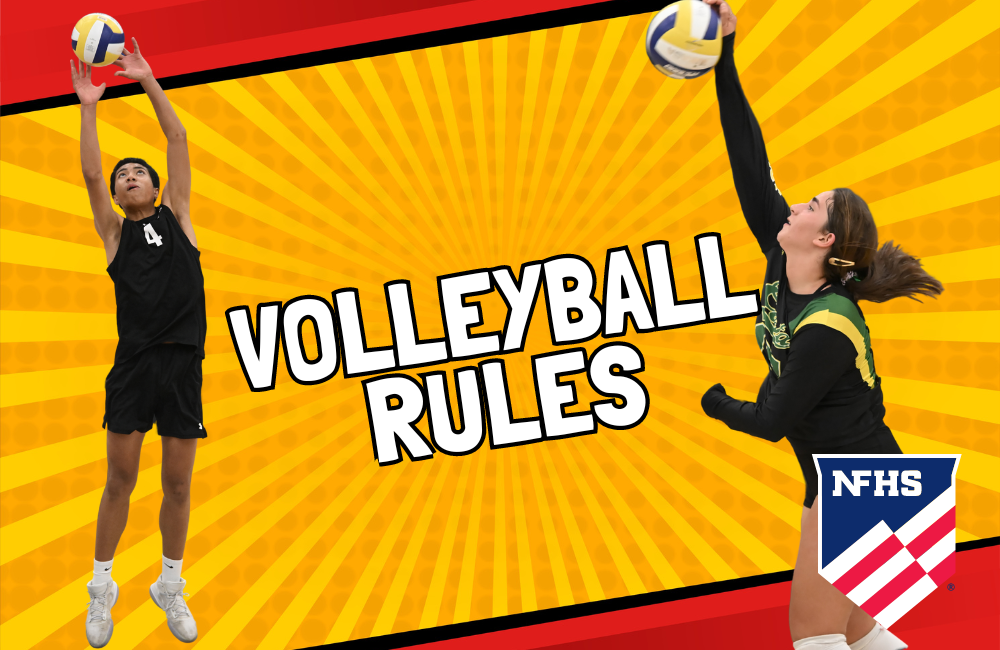
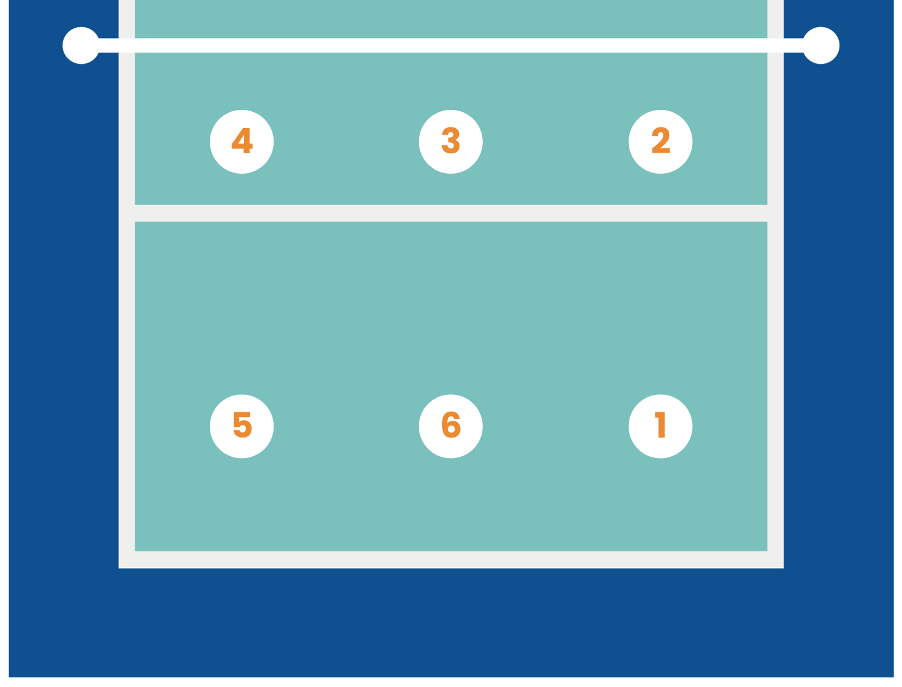
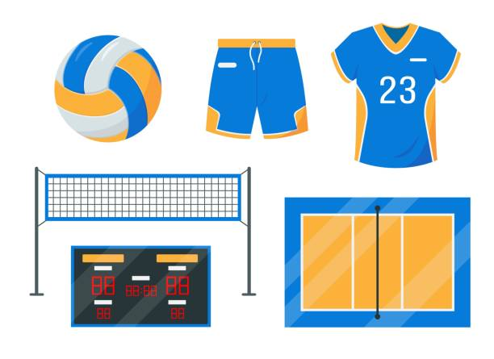

So, when it comes to volleyball, there are a few basic rules you'll want to keep in mind. First off, each team is allowed only three consecutive touches of the ball before sending it back over the net - that means bump, set, spike! And speaking of the net, players can't touch or reach over it during play. When serving, make sure your foot doesn't step over the back line, and do not forget about rotation - players must move positions on the court in a clockwise direction when they win the serve. And finally, if you're blocking at the net, just remember to jump straight up and not reach over to the other side.

In volleyball, there are six positions that players typically fill on the court. The team is divided into two groups: front row players and back row players. The front row positions include outside hitter, middle blocker, and opposite hitter. Outside hitters are responsible for attacking from the left side of the net, while middle blockers specialize in blocking shots at the net and can also contribute to hitting. Opposite hitters usually play on the right side of the net and focus on attacking from that side. The back row positions consist of libero, setter, and defensive specialist. Liberos are defensive specialists who excel at digging balls and passing while setters are responsible for setting up their teammates for attacks. Defensive specialists primarily focus on serving tough serves and playing defense in the back row.

To play volleyball, you don't need much equipment, making it an easy and accessible sport to enjoy. The essential items you'll need include a volleyball , knee pads to protect your joints during dives and slides, and comfortable athletic shoes with good grip for quick movements on the court. A net and poles are necessary for setting up the playing area, along with boundary lines to define the court's edges. Depending on the level of competition, additional gear like ankle braces, jerseys/uniforms,may be required. However, for casual play with friends or family, all you really need is a ball and a suitable playing space.
